FIND TASTE THAT SUITS YOU
BREAKFAST
MASALA DOSA

IDLI SAMBHAR
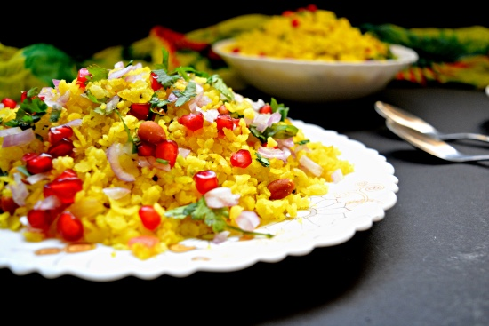
POHA
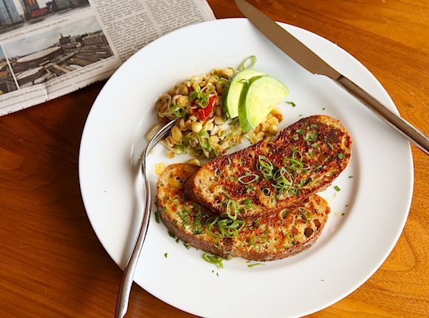
SAVORY FRENCH TOAST
LUNCH
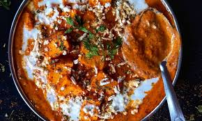
PANEER LABABDAR
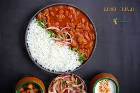
RAJMA
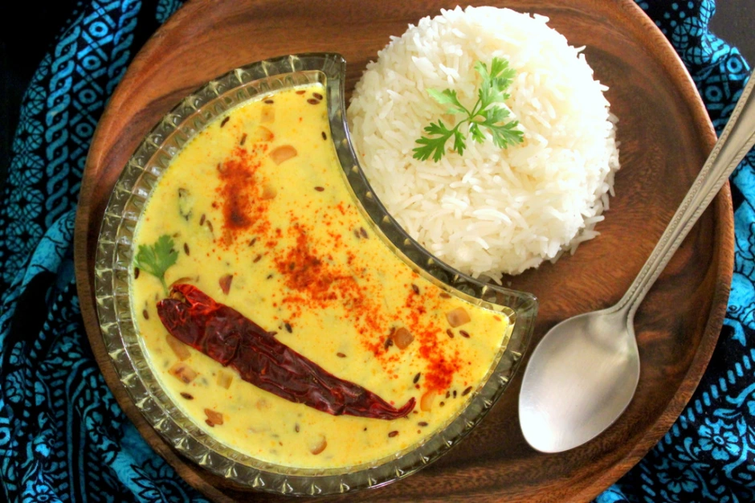
KADHI
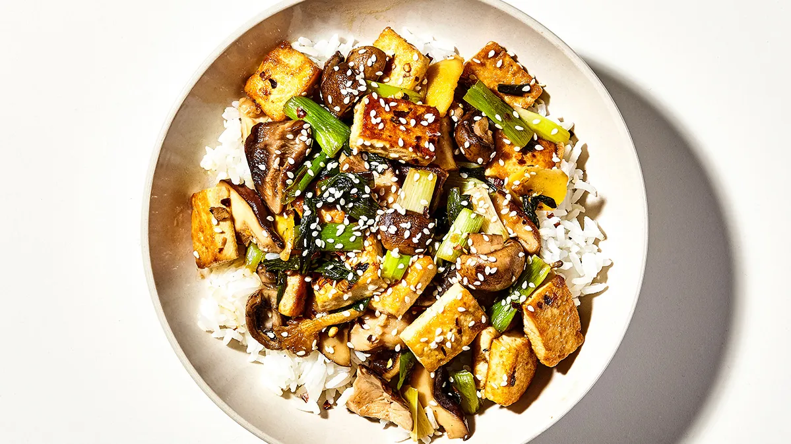
MUSHROOM
DINNER
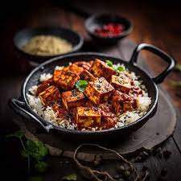
TOFU TIKKA MASALA

DAL MAKHANI
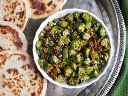
BHINDI
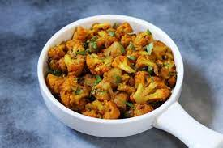
ALOO GOBHI
SNACKS
BURGIR

SANDWICH
PIZZA
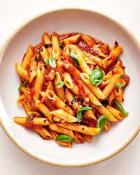
PASTA
SWEETS
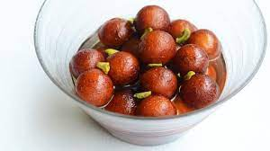
GULAB JAMUN
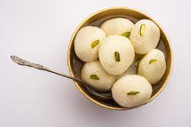
RASGULLA
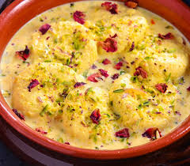
RASMALAI
BURFI
CAKES
CHEESE CAKE
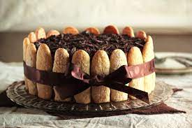
TRISMASU
TRES LES CHES
RED VELVET